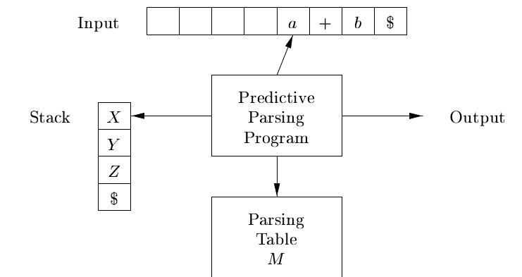

type Table = Map (Nonterminal, Terminal) [Production]
buildTable :: Grammar -> Table buildTable g = foldr step Map.empty (productions g) where firstG = first g followG = follow g insertTable p s tbl = Map.insertWith union (leftHand p, s) [p] tbl
step p tbl = let firstM = Map.fromList firstG lhs = leftHand p rhs = rightHand p firstP = firstForWord rhs firstM followP = maybe [] id (lookup lhs followG) tbl1 = foldr (insertTable p) tbl [x | x <- firstP, x /= Lambda] tbl2 = if Lambda `elem` firstP then foldr (insertTable p) tbl1 followP else tbl1 in if Lambda `elem` firstP && Dollar `elem` followP then insertTable p Dollar tbl2 else tbl2

data Pred = Pred { stack :: [Symbol] , input :: String , table :: Table }
initial :: Grammar -> String -> Pred initial g s = Pred stk (s ++ "$") (buildTable g) where stk = [Var (start g), Symb Dollar]
predictiveM :: Lexer -> PredictiveM () predictiveM plex = do v <- emptyStack if v then return () else do r <- nextToken plex a <- top when (isTerminal a && a /= (Symb r)) (throwError $ expecting a r) when (isTerminal a && a == (Symb r)) (pop >> consumeToken plex) when (isNonterminal a) $ do let nt' = nonTerminal a v <- pop p <- lookupTable nt' r when (isNothing p) (throwError "Parsing table error!") let p' = fromJust p push (rightHand p') predictiveM plex